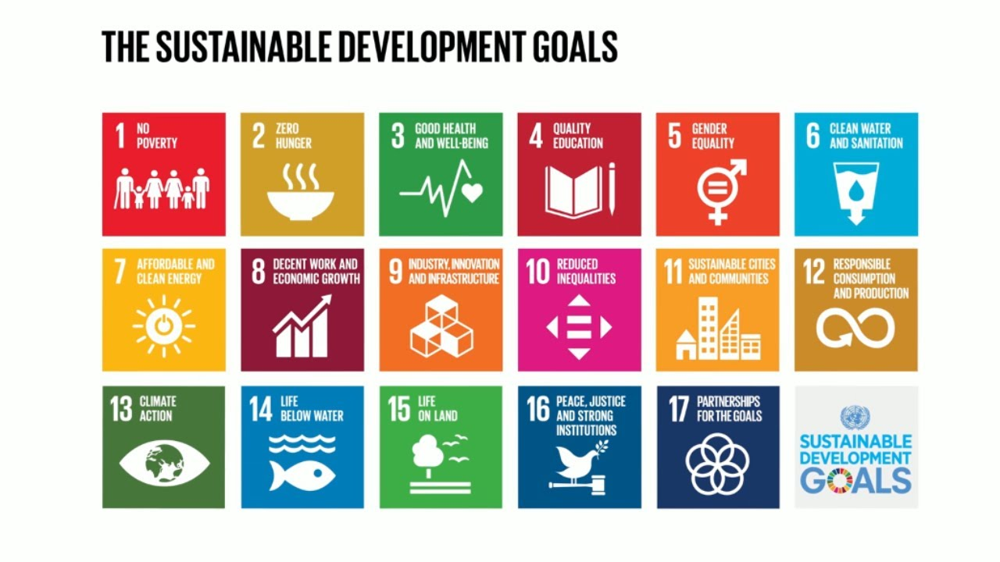

About me:
Hello! I'm a passionate first-year master's student in AI at Aivancity Paris. My educational journey began at the Private and Technological Higher School in Tunis, where I delved into the world of Intelligent Networks as a student engineer for four enriching years.
From a young age, my fascination with new technologies and computers has been a driving force. As time progressed, I found myself drawn to the captivating realm of mathematics, serving as the bedrock for the marvels of modern technology. I take immense pleasure in exploring topics like algebra, optimization, operations research, and the intriguing intersection of probability and statistics.
In the era of Big Data and ever-more powerful devices, we stand at the threshold of a new frontier where intelligent models can tackle everyday challenges, turning tasks once considered arduous or seemingly impossible with classical programming into achievable feats. My interest in computer vision was ignited as I contemplated its potential applications in understanding diseases, unraveling unexplained phenomena, and envisioning a new wave of smartphones contributing positively to society. This passion has grown deeper, spurred by my personal struggle with eye issues since childhood.
One of my aspirations is to embark on a project that addresses the anticipation of eye-related problems. I envision a model that not only detects issues in advance but also serves as a valuable companion to medical professionals during ocular surgical procedures. Through this endeavor, I hope to contribute to advancements in healthcare and make a meaningful impact on individuals experiencing eye-related challenges.
Technical skills:
- Programming: Python, MATLAB, C/C++, OpenCV
- Tools: Linux OS, Git
The Sustainable Development Goals and my vision of things and the use of AI:
Climate change is the new global challenge, and it is crucial to be aware of it and undertake actions that will be beneficial for the environment.
I am committed to carrying out projects that consistently align with the United Nations' sustainable development goals.
Aligned with the Sustainable Development Goals and my commitment to environmentally conscious initiatives, I recognize the potential of AI in addressing climate change.
However, it's crucial to acknowledge that while AI models themselves don't emit CO2, their training, reliant on GPU computing power, contributes to emissions.
To address this, optimizing algorithms for reduced training time is imperative.
Additionally, the exponential growth of data calls for a reevaluation of storage methods. Traditional data centers, due to their cost, size, and energy consumption, are unsustainable. A promising solution could be DNA-based storage, offering a sustainable alternative.

Seasonal project:
"Like seasons, our projects are ephemeral but bring renewal. Each new endeavor is an opportunity to grow and flourish."
I've set myself a little game, each season deserves 1 project, so basically 4 seasonal projects per year.
These are just the seasonal projects. I will post the project links on this site based on the year.
Others:
I love to discuss, share my opinion,
Sport , Read(Polar-Thriller-Scientific paper ^^), Philosophy,
I love playing tarot;
it's a fantastic game, and my grandfather, Armand DAVENEL, taught me how to play.
He used to be a champion of tarot in France.
Link if you want to try or play: Tarot card
{% endblock %}